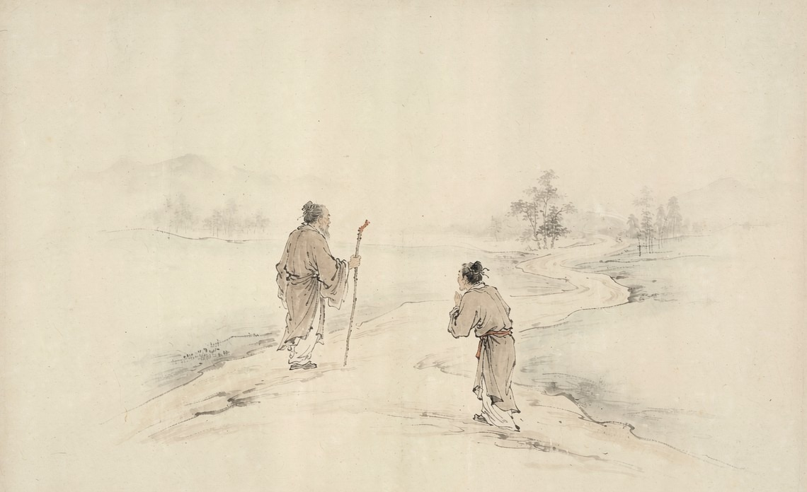
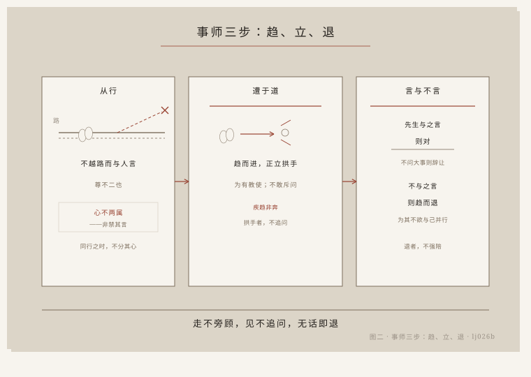

曲礼上 · 一·二十七 · 第 26 课
这一节讲跟先生同行与在路上遇见先生：同行不越路去和别人说话；路上遇见，快步上前、正立拱手；先生与你说就答，不与你说话就快步退下。
说什么事：从于先生，不越路而与人言；遭先生于道，趋而进，正立拱手；先生与之言则对，不与之言则趋而退。
落在哪一层：教。上节在院里教孩子，这节在路上一路随行。
为何编在此位：礼的次序是「在家—出门—路上」；此节正是出门之后的第一条路。
【经】從於先生，不越路而與人言。遭先生於道，趨而進，正立拱手。先生與之言則對，不與之言則趨而退。
先生 郑注：「先生，老人教学者。」疏：「谓师为先生者，言彼先己而生，其德多厚也。自称为弟子者，言己自处如弟子，则尊师如父兄也。」崔灵恩：「凡言先生，谓年德俱高，又教道于物者。」
不越路 郑注：「尊不二也。」——一身不事二主，一时不分二心。
趋 疏：「疾趋而进就之也。」——趋是小步快走，不是奔。
正立拱手 疏：「拱手，见师而起敬，故疾趋而进就之也。又不敢斥问先生所为，故正立拱手而听先生之教。」
与之言则对 疏：「此谓问时事之言则对，若问己大事，则辞让然后对。」
趋而退 郑注：「为其不欲与己并行。」——先生不与你说话，是不愿与你并行；你退，是不强陪。
跟着先生走，不横穿道路去同别人说话。在路上遇见先生，快步上前，正面立定、拱手。先生同你说话就答；不同你说话，就快步退下。
三句三步：走时不旁顾，见时不躲，见后不缠。所谓「尊不二」，不是不许你与别人说话，是同行之时，心不两属。
第一层 「不越路」是心的位置，不是脚的位置 郑注只三字：「尊不二也。」同道而行，你越到路那边去应酬别人，人还在，心已分。礼在这里管的是心的从属，不是脚步。
第二层 「趋」是分寸 疏解「疾趋而进就之」：疾而非奔，快而不乱。见尊长时既不能缓行若不相识，也不能奔突失仪。礼的速度，也是一种敬。
第三层 「正立拱手」是听的样子 疏说得好：「不敢斥问先生所为，故正立拱手而听先生之教。」不问「您去哪儿」，只站定了等他讲。这一句把「敬」从动作落成了「不追问」。
第四层 「言则对，不言则退」是双向的分寸 郑注：「为其不欲与己并行。」先生不开口，是不想与你并肩；你速退，是不硬陪。今日许多人恰恰相反：尊者沉默，便更要凑近。此节给的是一条退的规矩。
与今日何干 「同行的分寸」今日几乎失传：与上级同走，一路问东问西，自以为亲近。此节说：同行时不分心，见面时不追问，无话时即退——敬在「不添」。
| 左 | 右 |
|---|---|
| 从于先生，不越路而与人言 | 尊不二也 |
| 先生，老人教学者 | 彼先己而生，其德多厚 |
| 遭先生于道，趋而进 | 疾趋而进就之 |
| 正立拱手 | 不敢斥问先生所为 |
| 言则对 | 问时事则对，问大事则辞让 |
| 不言则趋而退 | 为其不欲与己并行 |

